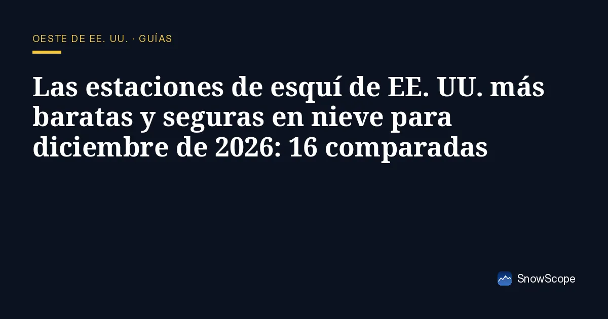
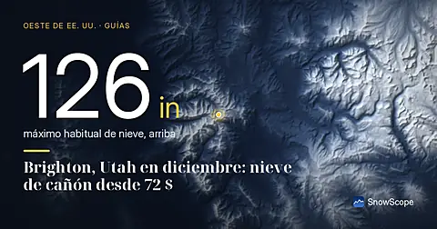

Las estaciones de esquí de EE. UU. más baratas y seguras en nieve para diciembre de 2026: 16 comparadas
La nieve a principios de diciembre es una apuesta en casi todas las estaciones estadounidenses, pero las probabilidades mejoran mucho según avanza el mes. Clasificamos 16 estaciones económicas por su historial real de diciembre —el porcentaje de los últimos 46 inviernos con al menos 50 cm a media montaña el 15 de diciembre— y comparamos cada una con el precio actual del forfait de día completo para adultos.
Consulta la previsión de nieve en tiempo real de US West en la app SnowScopeEspesor de nieve, alertas de nieve polvo y mapa 3D, gratis.
Qué estaciones tienen mejores probabilidades en diciembre
Grand Targhee (Wyoming) es claramente la líder: ha mantenido 50 cm o más a media montaña el 15 de diciembre en cada uno de los últimos 46 inviernos. Mt. Baker (Washington) la sigue con un 93 %, luego Brighton (Utah) con un 89 %. Seis estaciones empatan con un 87 %: White Pass y Snow King (ambas en estados montañosos), Brundage y Lookout Pass (Idaho), además de Montana Snowbowl y Schweitzer (también en Idaho).
La segunda mitad incluye Timberline (Oregon) con un 78 %, Wolf Creek (Colorado) con un 72 %, Ski Cooper (Colorado) con un 70 %, Loveland (Colorado) con un 67 %, Beaver Mountain (Utah) con un 57 % y Bridger Bowl (Montana) con un 50 %.

Cinco estaciones que equilibran precio y fiabilidad
Si quieres probabilidades superiores al 80 % y un forfait menor de 80 $ al día, cinco centros turísticos encajan. Brundage mantiene un 87 % de probabilidad y empieza en 65 $ en días seleccionados (los precios suben conforme se acerca tu fecha). White Pass también está en un 87 % y comienza desde 69 $ en línea de lunes a jueves fuera de festivos. Lookout Pass alcanza un 85 % de probabilidad y cuesta 63 $ si reservas un día entre semana con antelación.
Las probabilidades de Brighton del 89 % tienen un precio inicial de 72 $ cuando compras con antelación. Montana Snowbowl iguala a Brundage con un 87 % según el historial y cobra 78 $ entre semana. La clave para los cinco: elige lunes a jueves y reserva en cuanto abran las fechas.
Las apuestas más fiables son más caras
El historial de diciembre del 100 % en Grand Targhee no es barato. Los forfaits en línea allí oscilan entre 125 $ y 180 $ según la fecha. Mt. Baker, con un 93 % de probabilidad, vende forfaits de día completo solo en taquilla: 98,80 $ en días de baja demanda (lunes a jueves fuera de festivos) y 115,42 $ en días de alta demanda, ningún precio incluye impuestos.
Snow King (Wyoming) comienza desde 100 $ y ofrece un 87 % de probabilidad. Timberline ofrece flexibilidad: su día completo en baja demanda es 129 $ o un forfait de tarde (desde el mediodía) es 96 $. El paquete de 3 días de Schweitzer por 249 $ sale a 83 $ al día.
Los grandes descuentos vienen con menos certeza a principios de mes
Los precios de forfait más bajos pertenecen a estaciones donde la nieve a mediados de diciembre no está garantizada. Ski Cooper cobra solo 49 $ entre semana (87 % de probabilidad en la división entre semana y fin de semana, pero solo 70 % de probabilidad el 15 de diciembre). Loveland vende forfaits de 60 $ en línea hasta el 13 de diciembre, luego sube a 159 $. Sunlight comienza en 74 $, Beaver Mountain es fijo a 75 $, Bridger Bowl 86 $ en línea y Wolf Creek 96 $ en días normales.
Estas estaciones se vuelven mucho más seguras conforme avanza diciembre. La probabilidad de buena nieve sube de semana en semana: para el 21-27 de diciembre, Ski Cooper alcanza un 96 % de probabilidad, Bridger Bowl un 78 % y Beaver Mountain un 76 %. Si tus fechas pueden cambiar, esperar hasta la tercera semana desbloquea tanto precios bajos como probabilidades de nieve mucho mejores.
Qué significan los números
Estos porcentajes rastrean 46 inviernos de 1980-81 a 2025-26. Responden una pregunta: ¿con qué frecuencia ha mantenido cada estación 50 cm o más a media montaña para el 15 de diciembre? Una profundidad típica de media montaña en esa fecha oscila desde 51 cm en Bridger Bowl hasta 118 cm en Grand Targhee y 132 cm en Timberline.
Los precios se consultaron en la página oficial de cada estación el 13 de noviembre de 2026. El precio dinámico significa que los precios 'desde' subirán conforme se agoten las fechas. La nieve temprana es fina y puede esconder rocas; consulta el mapa de nieve unos días antes de viajar.
Cómo encontrar la mejor oferta para tus fechas
Si puedes esquiar en la segunda o tercera semana de diciembre, elige un lunes a jueves y reserva en línea cuando abran las fechas. Evitas el recargo de fin de semana y el período festivo de máxima demanda, y el historial muestra buenas probabilidades en la mayoría de estas estaciones. Por ejemplo, Ski Cooper con un 70 % de probabilidad el 15 de diciembre sube a un 93 % para la semana del 14-20 de diciembre y un 96 % para el 21-27 de diciembre.
Si principios de diciembre es tu única opción, mantente en la primera mitad del ranking. Grand Targhee, Mt. Baker y Brighton se mantienen todos por encima del 85 % de probabilidad desde el 1 de diciembre. Ten paciencia, comprueba las condiciones antes de conducir y recuerda: el calendario es tu forfait más barato.
Consejos para esquiadores
- Reserva un viaje entre semana en la segunda o tercera semana de diciembre: las probabilidades de nieve son altas, evitas el recargo de fin de semana y te saltas la prima festiva de máxima demanda.
- Aprovecha el precio dinámico: cuando una estación publica un precio 'desde', reserva en cuanto abra el calendario; los precios solo suben.
- Si debes esquiar a principios de diciembre, elige estaciones en la primera mitad del ranking (por encima del 85 % de probabilidad): Grand Targhee, Mt. Baker, Brighton, White Pass, Snow King, Brundage, Lookout Pass y Schweitzer.
- Finales de diciembre son más seguros para estaciones económicas en la segunda mitad. Para la semana de Navidad, Ski Cooper, Bridger Bowl y Beaver Mountain alcanzan un 76-96 % de probabilidad; consulta el mapa de nieve unos días antes de ir.
- Consulta el parte de avalanchas oficial antes de esquiar fuera de pista.
Sobre estas cifras
Los espesores de nieve de las estaciones son la nieve más profunda en las pistas altas en la fecha indicada; son estimaciones para una zona, no una medida en un punto. Las previsiones pueden cambiar. Consulta siempre el boletín oficial de aludes antes de salir fuera de pista.
Citar este informe
Para investigación, docencia o prensa: cifras y gráficos reutilizables libremente bajo CC BY 4.0 con esta cita.
SnowScope (2026), Las estaciones de esquí de EE. UU. más baratas y seguras en nieve para diciembre de 2026: 16 comparadas, https://snowscope.app/blog/es/2026/11/cheapest-snow-sure-us-ski-areas-december-2026.html, consultado el 2026-11-14
SnowScope (Atlas Labs). (2026, November 14). Las estaciones de esquí de EE. UU. más baratas y seguras en nieve para diciembre de 2026: 16 comparadas. SnowScope snow reports. https://snowscope.app/blog/es/2026/11/cheapest-snow-sure-us-ski-areas-december-2026.html
BibTeX
@misc{snowscope2026cheapestsnowsureusskiare,
author = {{SnowScope (Atlas Labs)}},
title = {Las estaciones de esquí de EE. UU. más baratas y seguras en nieve para diciembre de 2026: 16 comparadas},
year = {2026},
month = nov,
howpublished = {\url{https://snowscope.app/blog/es/2026/11/cheapest-snow-sure-us-ski-areas-december-2026.html}},
note = {Published 2026-11-14 14:47 UTC; accessed 2026-11-14}
}· CC BY 4.0 · Métodos, datos y herramientas →
Sigue US West
Gratis: un aviso cuando llega la nieve y la previsión cada mañana.
Más partes de nieve

Brighton a media montaña típicamente acumula 94 cm el 15 de diciembre. Datos al 13 de noviembre de 2026.

Bridger Bowl cobra $86 en línea para 2026/27. A media montaña hay 50 cm el 15 de diciembre en la mitad de los inviernos; la semana de Navidad mejora las probabilidades a 78 %.

Siete estaciones de esquí independientes del Oeste donde un forfait de día de adulto cuesta entre 49 y 98,8 $ en días de diario, comparadas con la nieve que suelen tener en diciembre.